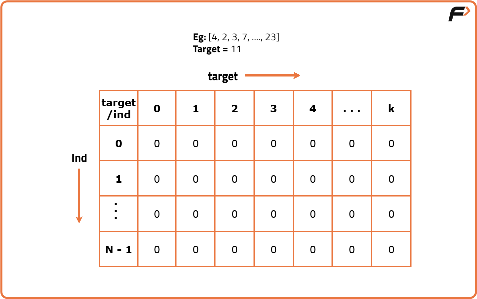
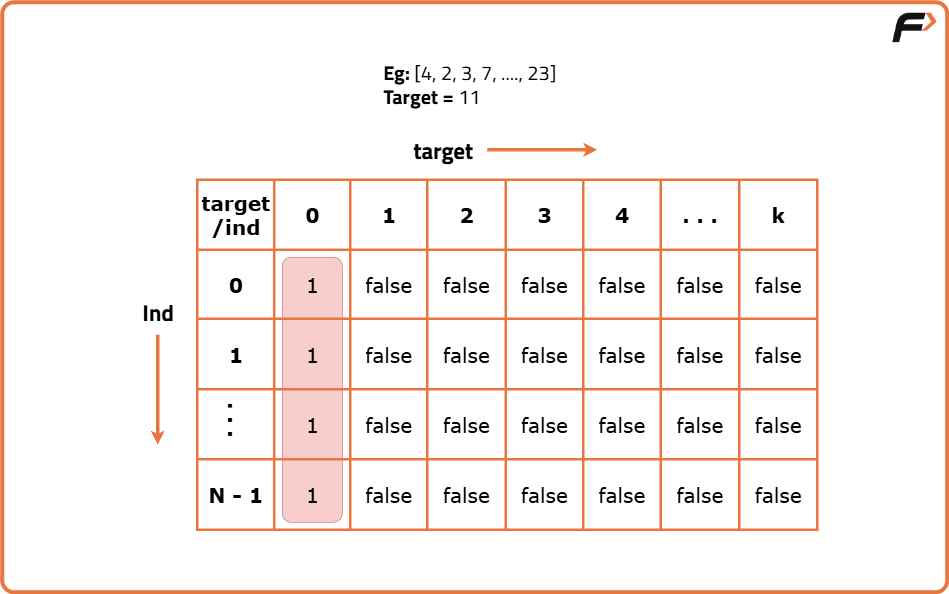
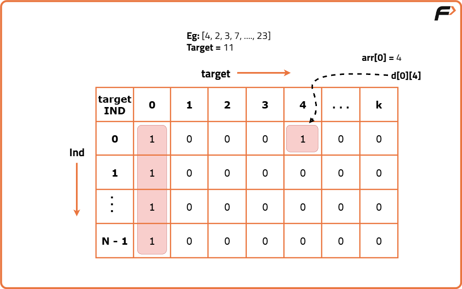

Target Sum (DP - 21)
Problem Statement: We are given an array ‘ARR’ of size ‘N’ and a number ‘Target’. Our task is to build an expression from the given array where we can place a ‘+’ or ‘-’ sign in front of an integer. We want to place a sign in front of every integer of the array and get our required target. We need to count the number of ways in which we can achieve our required target.
Examples
Input : nums = [1,1,1,1,1], target = 3 Output : 5 Explanation : There are 5 ways to assign symbols to make the sum of nums be target 3. -1 + 1 + 1 + 1 + 1 = 3 +1 - 1 + 1 + 1 + 1 = 3 +1 + 1 - 1 + 1 + 1 = 3 +1 + 1 + 1 - 1 + 1 = 3 +1 + 1 + 1 + 1 - 1 = 3
Input : nums = [1], target = 1 Output : 1 Explanation : There is only one number, and we can assign a '+' sign to it to reach the target. +1 = 1
Disclaimer: Don’t jump directly to the solution, try it out yourself first.
Memorization Approach
Algorithm
The answer is yes! We can use the concept we studied in the following article Count Partitions with Given Difference (DP – 18).
The following insights will help us to understand intuition better:
- If we think deeper, we can say that the given ‘target’ can be expressed as addition of two integers (say S1 and S2). S1 + S2 = target – (i)
- Now, from where will this S1 and S2 come? If we are given the array as [a,b,c,d,e], we want to place ‘+’ or ‘-’ signs in front of every array element and then add it. One example is : +a-b-c+d+e which can be written as (+a+d+e) + (-b-c). Therefore, we can say that S1 = (+a+d+e) and S2 = (-b-c) for this example.
- If we calculate the total sum of elements of the array (say totSum), we can say that,S1 = totSum - S2 – (ii)
- Now solving for equations (i) and (ii), we can say that S2 = (totSum - target)/2 – (iii)
Count Subsets with Sum K.
Edge Cases:
The following edge cases need to be handled:
- As the array elements are positive integers including zero, we don’t want to find the case when S2 is negative or we can say that totSum is lesser than D, therefore if totSum<target, we simply return 0.
- S2 can’t be a fraction, as all elements are integers, therefore if totSum - target is odd, we can return 0.
From here on we will discuss the approach to “Count Subsets with Sum K” with the required modifications. Moreover, as the array elements can also contain 0, we will handle it as discussed in part-1 of this article.
Steps to form the recursive solution:
We will first form the recursive solution by the three points mentioned in Dynamic Programming Introduction.
Express the problem in terms of indexes
The array will have an index but there is one more parameter “target”. We are given the initial problem to find whether there exists in the whole array a subsequence whose sum is equal to the target.
So, we can say that initially, we need to find(n-1, target) which means that we are counting the number of subsequences in the array from index 0 to n-1, whose sum is equal to the target. Similarly, we can generalize it for any index ind as follows:
Base Cases:
- If target == 0, it means that we have already found the subsequence from the previous steps, so we can return 1.
- If ind == 0, it means we are at the first element, so we need to return arr[ind] == target. If the element is equal to the target we return 1 else we return 0.
Try out all possible choices at a given index
We need to generate all the subsequences. We will use the pick/non-pick technique as discussed in this video “Recursion on Subsequences”.
We have two choices:
- Exclude the current element in the subsequence: We first try to find a subsequence without considering the current index element. For this, we will make a recursive call to f(ind-1, target).
- Include the current element in the subsequence: We will try to find a subsequence by considering the current index as element as part of subsequence. As we have included arr[ind], the updated target which we need to find in the rest of the array will be target - arr[ind]. Therefore, we will call f(ind-1, target-arr[ind]).
Note: We will consider the current element in the subsequence only when the current element is less than or equal to the target.
Return sum of taken and notTaken
As we have to return the total count of subsets with the target sum, we will return the sum of taken and notTaken from our recursive call.
Steps to memoize a recursive solution:
- Create a dp array of size [n][k+1]. The size of the input array is ‘n’, so the index will always lie between ‘0’ and ‘n-1’. The target can take any value between ‘0’ and ‘k’. Therefore we take the dp array as dp[n][k+1]
- We initialize the dp array to -1.
- Whenever we want to find the answer of particular parameters (say f(ind,target)), we first check whether the answer is already calculated using the dp array(i.e dp[ind][target]!= -1 ). If yes, simply return the value from the dp array.
- If not, then we are finding the answer for the given value for the first time, we will use the recursive relation as usual but before returning from the function, we will set dp[ind][target] to the solution we get.
Code
#include <bits/stdc++.h>
using namespace std;
class Solution {
public:
// Function to count number of ways to assign '+' or '-' to reach target
int findTargetSumWays(vector<int>& nums, int target) {
// Calculate the total sum of the array
int totalSum = accumulate(nums.begin(), nums.end(), 0);
// If target is not achievable (because of sum or parity), return 0
if ((totalSum - target) < 0 || (totalSum - target) % 2 != 0)
return 0;
// Our problem reduces to subset sum with sum = (totalSum - target) / 2
int subsetSum = (totalSum - target) / 2;
// Initialize memo table with -1
vector<vector<int>> dp(nums.size(), vector<int>(subsetSum + 1, -1));
// Call recursive function with memoization
return countSubsets(nums, nums.size() - 1, subsetSum, dp);
}
private:
// Recursive function with memoization
int countSubsets(vector<int>& nums, int ind, int target, vector<vector<int>>& dp) {
// Base case: when we are at index 0
if (ind == 0) {
// Two scenarios:
if (target == 0 && nums[0] == 0) return 2; // {pick or not pick 0}
if (target == 0 || target == nums[0]) return 1; // Either pick or skip
return 0; // Otherwise no valid way
}
// Return if already computed
if (dp[ind][target] != -1) return dp[ind][target];
// Exclude current element
int notPick = countSubsets(nums, ind - 1, target, dp);
// Include current element if it is <= target
int pick = 0;
if (nums[ind] <= target)
pick = countSubsets(nums, ind - 1, target - nums[ind], dp);
// Store and return result
return dp[ind][target] = pick + notPick;
}
};
// Driver code
int main() {
Solution sol;
vector<int> nums = {1,1,1,1,1};
int target = 3;
cout << sol.findTargetSumWays(nums, target) << endl; // Output: 5
return 0;
}
Complexity Analysis
Time Complexity: O(N*K),There are N*K states therefore at max ‘N*K’ new problems will be solved.
Space Complexity: O(N*K) + O(N),We are using a recursion stack space(O(N)) and a 2D array ( O(N*K)).
Tabulation Approach
Algorithm

First, we need to initialize the base conditions of the recursive solution.- If target == 0, ind can take any value from 0 to n-1, therefore we need to set the value of the first column as 1.

- The first row dp[0][] indicates that only the first element of the array is considered, therefore for the target value equal to arr[0], only cell with that target will be true, so explicitly set dp[0][arr[0]] =1, (dp[0][arr[0]] means that we are considering the first element of the array with the target equal to the first element itself). Please note that it can happen that arr[0]>target, so we first check it: if(arr[0]<=target) then set dp[0][arr[0]] = 1.

- After that, we will set our nested for loops to traverse the dp array, and following the logic discussed in the recursive approach, we will set the value of each cell. Instead of recursive calls, we will use the dp array itself.
- At last, we will return dp[n-1][k] as our answer.
Code
#include <bits/stdc++.h>
using namespace std;
class Solution {
public:
// Function to find number of ways to assign + or - to reach the target
int findTargetSumWays(vector<int>& nums, int target) {
int n = nums.size();
// First calculate the total sum of all numbers
int totalSum = accumulate(nums.begin(), nums.end(), 0);
// If (target + totalSum) is odd or target > totalSum, no valid partition exists
if ((totalSum + target) % 2 != 0 || abs(target) > totalSum) return 0;
// We now need to count subsets with sum = (target + totalSum) / 2
int newTarget = (totalSum + target) / 2;
// Create DP table: dp[i][j] = number of ways to make sum j using first i numbers
vector<vector<int>> dp(n + 1, vector<int>(newTarget + 1, 0));
// Base case: One way to form sum 0 (by taking no elements)
for (int i = 0; i <= n; i++) dp[i][0] = 1;
// Fill DP table iteratively
for (int i = 1; i <= n; i++) {
for (int j = 0; j <= newTarget; j++) {
// Exclude current element
dp[i][j] = dp[i - 1][j];
// Include current element if it does not exceed current target j
if (nums[i - 1] <= j) {
dp[i][j] += dp[i - 1][j - nums[i - 1]];
}
}
}
return dp[n][newTarget];
}
};
// Driver code
int main() {
Solution sol;
vector<int> nums = {1, 1, 1, 1, 1};
int target = 3;
cout << sol.findTargetSumWays(nums, target) << endl; // Output: 5
return 0;
}
Complexity Analysis
Time Complexity: O(N*K),There are two nested loops
Space Complexity: O(N*K),We are using an external array of size ‘N*K’. Stack Space is eliminated.
Space Optimization Approach
Algorithm
dp[ind][target] = dp[ind-1][target] + dp[ind-1][target-arr[ind]]
We see that to calculate a value of a cell of the dp array, we need only the previous row values (say prev). So, we don’t need to store an entire array. Hence we can space optimize it.
Note: Whenever we create a new row ( say cur), we need to explicitly set its first element as true according to our base condition.
- First, calculate the total sum of all elements in the array.
- If (total sum + target) is odd or if the absolute value of target is greater than total sum, return 0 because it is impossible to partition the array.
- Transform the problem into counting subsets with sum = (total sum + target) / 2.
- Initialize a 1D DP array of size (newTarget + 1) with all values 0.
- Set dp[0] = 1 because there is one way to make sum 0 (by choosing no elements).
- Iterate through each number in the array.
- For each number, update the DP array from right to left (from newTarget down to current number).
- For each index j, update dp[j] = dp[j] + dp[j - current number] if j is at least current number.
- At the end of iteration, dp[newTarget] will contain the total number of ways to reach the target sum.
Code
#include <bits/stdc++.h>
using namespace std;
class Solution {
public:
// Function to count number of ways to assign signs to reach the target
int findTargetSumWays(vector<int>& nums, int target) {
// Step 1: calculate total sum of array
int total = accumulate(nums.begin(), nums.end(), 0);
// Step 2: check feasibility
if ((total + target) % 2 != 0 || abs(target) > total) return 0;
// Step 3: new target for subset sum problem
int newTarget = (total + target) / 2;
// Step 4: initialize dp array of size newTarget + 1 with 0
vector<int> dp(newTarget + 1, 0);
// Step 5: base case: one way to form sum 0 (by choosing nothing)
dp[0] = 1;
// Step 6: iterate over each number
for (int num : nums) {
// Step 7: update dp array from right to left
for (int j = newTarget; j >= num; j--) {
dp[j] += dp[j - num];
}
}
// Step 8: final answer
return dp[newTarget];
}
};
// Driver code
int main() {
Solution sol;
vector<int> nums = {1,1,1,1,1};
int target = 3;
cout << sol.findTargetSumWays(nums, target) << endl;
return 0;
}
Complexity Analysis
Time Complexity: O(N*K),There are three nested loops
Space Complexity: O(K),We are using an external array of size ‘K+1’ to store only one row.